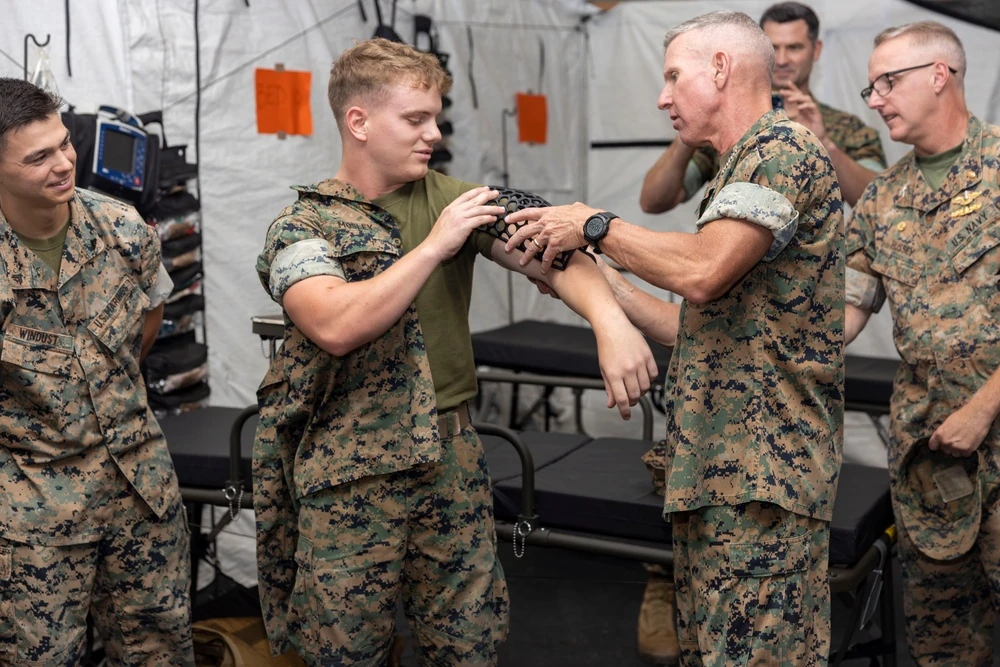
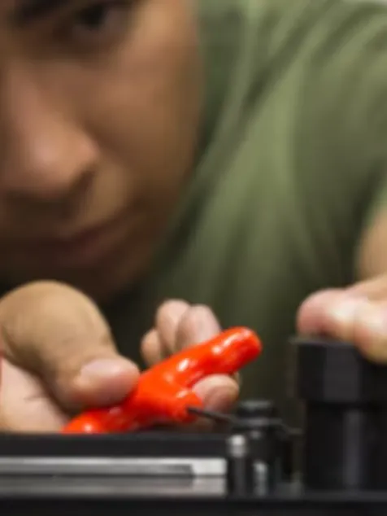

U.S. MARINE CORPS ·
Forging the Future: How Advanced Manufacturing Is Revolutionizing Marine Corps Logistics
Read the original
As the United States Marine Corps continues to execute its strategic shift towards the Indo-Pacific, the importance of overcoming the logistical challenges of the modern battlefield has become increasingly evident. At the vanguard of this transformative landscape, Marine Corps Systems Command's Advanced Manufacturing Systems team, or AMS team, is innovating to overcome the logistical challenges of the modern battlefield.
As stated in the Marine Corps' Installations and Logistics guidance, to succeed on the modern battlefield, the Corps “will need a logistics enterprise fully integrated with the broader objectives of Force Design, capable of supporting multi-domain and distributed operations in contested environments.”
Keeping these insights in focus, the AMS team is leading the charge to field bleeding-edge solutions to ensure the warfighter has access to mission-critical equipment and replacement parts without having to rely on traditional supply lines or navigate the constraints of iron mountains.
According to Matt Audette, AMS program analyst, having the ability to essentially 3D print key components on the battlefield could stand to revolutionize how the Corps thinks about logistics.
“In a nutshell, additive manufacturing is a game-changer for the Marine Corps. It allows us to repair equipment and innovate solutions right on the frontline," said Audette. "With its smaller footprint and easy-to-use technology, we can construct essential components right on the battlefield, making us nimbler and more responsive in any combat scenario."
When speaking to the AMS team, there appears to be a consensus that this innovative approach to manufacturing enables rapid delivery of mission-critical components to the front lines, with multiple subject matter experts underscoring the significance of augmenting the traditional supply chain.
"Parts break – that's the reality of the battlefield,” said Robert Davies, AMS team lead. “You used to have two simple choices: bring the parts or order the parts. Our advanced manufacturing solutions rewrite that playbook. Now, we can actually manufacture essential components right in the combat zone. When something breaks, a call is made: 'We need a component.' No more 'We forgot it' or 'It'll take months to arrive.' We contact our machinists and within a couple of hours, we're making and sending parts back up to the frontline."

While it might be tempting to view advanced manufacturing as a futuristic endeavor still on the horizon, recent successes suggest otherwise and Marines are now empowered to create stand-alone items such as hand tools, jigs, table models, training aids, and even vehicle parts.
Just this past June, Navy and Marine engineers demonstrated the technology's real-world potential by successfully 3D-printing a medical cast aboard a Marine Corps Osprey in mid-flight – demonstrating not only an increase in operational survivability but also an enhancement in battlefield lethality by minimizing downtime and accelerating troop readiness.
Similar successes to those achieved with the medical cast are seen in the creation of vehicle parts, with the Joint Light Tactical Vehicle serving as a prime example.
“We’re taking what our guiding documents say about modern day battlefield foraging and creating a real capability to do so with repair parts,” said Audette. “With our 3D printers and CNC mills, we can now craft these parts right where the fight is happening. What's more, our allies possess the same industrial capabilities as we find here in the US. This also means that whether we're in Darwin, the Philippines, or Japan, we can harness local expertise and resources to ensure our equipment remains mission-ready without relying on traditional supply chains.”
Dr. Kristin Holzworth, chief scientist on the AMS team, explains that this capability becomes increasingly vital as the Corps continues its strategic shift towards the Indo-Pacific.
“Large-scale advanced manufacturing offers a solution to complement our limited assets. What makes it truly advantageous is its adaptability. Unlike traditional manufacturing, where we conform to one build, with 3D printing, we tailor each print to the specific mission's requirements,” she noted.
Ultimately, advanced manufacturing technologies help advance Force Design’s transformative goal of creating, “Smaller but better-connected formations that organically possess a complete kill chain appropriate to echelon, and that can prevail in a contested operating environment.”
Citing “major end items” such as aircraft engines and propellers, Gen. Eric M. Smith, Commandant of the Marine Corps, recently told the Senate Armed Services Committee, “We have to do some very creative work to do additive manufacturing and 3D printing forward,” stressing the importance of taking pressure off of the lines that come from the United States through contested logistics areas.
After all, as he noted, “Every pound matters when you're trying to move things across the expanse of the Pacific.”
As the Marine Corps continues its journey towards modernization under Force Design and the challenges posed by a pivot to the Pacific, feedback from Marines on the ground has been overwhelmingly positive. Notably, younger generations of Marines, who have grown up in a digital age, are embracing advanced manufacturing technologies with remarkable ease.
According to Audette, “The advantage of additive manufacturing is its accessibility and rapid training. Unlike traditional machining, which requires months of training and involves large equipment, additive manufacturing's smaller machines have a lower learning curve. Many junior Marines already have experience with 3D printers, enabling us to quickly train them in a matter of days, enhancing readiness and problem-solving capabilities.”
This easy access to the capability aligns closely with the objectives of Talent Management, which urges the Corps to cultivate an adaptive, highly skilled force that can "solve problems faster and more creatively."
But advanced manufacturing does much more than reduce iron mountains and streamline logistical demands; it also offers significant cost savings to the taxpayer.
"In traditional manufacturing, it takes time to scale production and achieve cost efficiency. With additive manufacturing, we reach optimal cost on day one, making it possible to produce low-volumes of parts efficiently” Audette explained.
It is important to understand, however, that this capability is not meant to replace industry partnerships; rather, it serves as a crucial alternative for the warfighter in the heat of battle who cannot afford to wait for traditional resupply channels to fill a request.
“Advanced manufacturing isn't about replacing traditional production lines; it's about supplementing them,” said Davies. “We're not here to mass-produce hundreds of components in an hour – that's for dedicated facilities. What we offer is the ability to produce a limited number of key components on-site when they're urgently needed, all while respecting intellectual property laws. This shortens the supply chain and enables rapid response, whether that means getting Marines into the fight quicker or extracting them more safely."
The AMS team is not solely focused on monetary or cost savings; instead, the true triumphs are found in the logistical innovation and the time efficiencies that heighten combat readiness.
Ultimately, advanced manufacturing is a pivot point in military logistics, crystallizing the future of warfare into an immediate reality. By infusing cutting-edge technology into the very sinews of Marine Corps operations, the AMS team is not only revolutionizing logistics but also fundamentally altering how we conceive of readiness and adaptability on the 21st-century battlefield.
As the Marine Corps intensifies its focus on global littorals, particularly within the intricate geopolitics of the Indo-Pacific, advanced manufacturing emerges as a crucial enabler for sustaining combat effectiveness. This technological leap is more than a contingency; it's a strategic imperative. By melding innovation with real-world application, the Corps isn't just gearing up for future conflicts – they're actively shaping the battlespace of tomorrow.
Editor’s note: Learn more about how the AMS team is redefining the Corps’ logistical capabilities on MARCORSYSCOM’s Equipping the Corps podcast, featuring Matt Audette, here: https://www.dvidshub.net/audio/73020/equipping-corps-s2-e11-advanced-manufacturing-systems-team-with-maj-matthew-audette